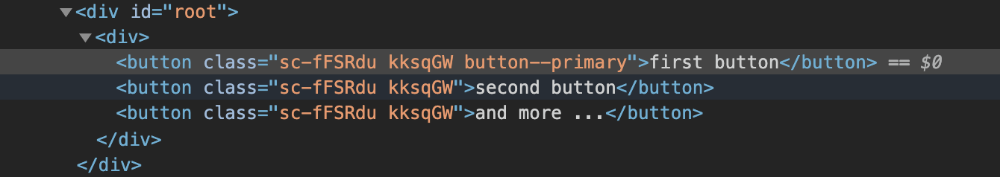

Similitudes con SCSS
En verdad son bastante parecidos
En esencia, el trabajo con css-in-js no difiere mucho de como se trabaja con SASS, así que vamos a ver algunos ejemplos usando la librería de styled-components en un entorno de aplicación create-react-app
NOTA: el propósito de este artículo es ofrecer un acercamiento al css-in-js, analizando las semejanzas de style-components respecto a SASS y las prácticas empleadas no son necesariamente las más recomendadas
Instalación
Es muy similar en ambos casos y tan solo tendremos que cargar una librería a través de npm
En el caso de SASS vamos a instalar el paquete node-sass como dependencia de desarrollo, ya que esta tecnología hace un compilado previo del código, transformándolo en CSS antes de ser distribuido y por lo tanto solo va a ser necesaria durante el desarrollo
$ npm install --save-dev node-sass
En el caso de uso habitual de los styled-components, los estilos codificados dentro de archivos js se van a procesar en tiempo de ejecución, por lo que su instalación será diferente
$ npm install --save styled-components
Si bien esta técnica añade un peso extra al proyecto por tener que adjuntar la librería (~16kb), nos va a ahorrar el peso correspondiente a los prefijos de compatibilidad entre navegadores y se va a encargar además de eliminar automáticamente todo el código muerto (reglas no utilizadas)
También es posible utilizar styled-components como herramienta de preproceso principalmente para el uso de React desde el servidor
Anidamiento y pseudo clases
Cuando comenzé a usar SASS las dos cosas que más me llamaron la atención fueron la posibilidad de crear variables (de las que css no disponía por entonces) y la facilidad para declarar selectores através del anidamiento
// file: sass-button.scss
$color-primary: #0010ff;
$button-padding: 1em 2em;
.sass-button {
// base rules
background: white;
color: black;
font-size: 1.2rem;
padding: $button-padding;
// variants
&--primary {
background: $color-primary;
color: white;
}
&--large {
font-size: 1.6rem;
}
}
styled-components se escribe de forma similar, la diferencia principal radica en que este nos va a devolver un componente de html con el estilo ya aplicado, vamos a verlo
// file: StcButton.js
// We're in the js land, so we need to import the lib
import styled from 'styled-components'
const colorPrimary = '#0010ff'
const padding = '1em 2em'
// It returns a react component based on a button tag
const StcButton = styled.button`
/* base rules */
background: white;
color: black;
font-size: 1.2rem;
padding: ${padding};
/* variants using clases (there's a better way to do it) */
&--primary {
background: ${colorPrimary};
color: white;
}
&--large {
font-size: 1.6rem;
}
`
/* Export it to use in another file */
export default StcButton;
Ahora vamos a ver como usar ambos enfoques dentro de un componente React
// file: Page.js
import React from 'react'
import StcButton from './StcButton'
import './sass-button'
function Page() {
return (
<div>
{/* using the css button */}
<button className="button button--primary">css button</button>
{/* using the styled button and apply the class variant */}
<StcButton className="button--primary">styled button</StcButton>
</div>
)
}
En los dos casos obtenemos el mismo resultado, un tag button con los estilos personalizados que hemos definido anteriormente, pero hay una diferencia, en el caso del styled-component el nombre de la clase ha cambiado

styled-components va a generar un nombre único para cada clase css, aislando estas reglas del entorno global, asegurándonos así de que no se va a filtrar por descuido en otros elementos html, esto suena bien ¿verdad? piensa qué pasaría si en el proyecto en que estamos trabajando queremos implementar un módulo de otro desarrollador que también tiene una clase .button tal y como hemos definido nosotros
Pero en este caso StcButton también está usando clases para las variantes
El uso de clases para manejar las variantes no es lo más recomendado con styled-components y existen otras maneras de facilitar la personalización
Variables y listas
SASS tiene su propio lenguaje para generar variables y listas, en el caso de styled-components, estamos trabajando dentro de un contexto de template literals, que permite escribir expresiones y podemos usar todo el arsenal que ofrece JS como son los arrays, objetos, mapas ...
Mixins
styled-components emplea una filosofía muy similar a los mixins en SASS y como hemos visto en el ejemplo, podemos hacer uso de la función css para generar el conjunto de reglas que queramos compartir
import {css} from 'styled-components'
// similar to SASS @mixin primary {...}
const primary = css`
background: ${colorPrimary};
color: white;
`
Temas
El uso de los temas nos permite crear variantes de estilo de manera sencilla, ya que nos dan acceso a propiedades particulares que se emplean globalmente dentro de nuestro diseño como por ejemplo colores, tipografías, tamaños, espacios, tipos de sombras ... y cualquier cosa que creamos que se puede reutilizar
styled-components hace uso de React.context y podemos definir un tema personalizado usando el componente ThemeProvider que provee de una propiedad theme donde podemos pasarle una configuración personalizada
Y así concluye esta comparativa entre styled-componentes y Sass, si te ha interesado el tema y quieres conocer un poco más sobre buenas prácticas con styled components o que librerías son las más utilizadas para el css-in-js con react, no dudes en visitar esos enlaces, una de las más interesantes y que yo tengo pendiente de poner a prueba es emotion, pero al final del día todas funcionan de una manera muy similar
Otro asunto que me parece muy interesante, es el ecosistema que se está organizando en paralelo con el css-in-js y es que dada su popularidad, están apareciendo interesantes librerías de componentes como:
- material-ui que utiliza su propia implementación de css-in-js y que tal y como ellos explican en este post, les ha ayudado a superar algunas de las limitaciones que se han encontrado en soluciones tipo LESS
- polished, que es una librería de utilidades con la que sacar el máximo partido a styled-componentes y que ofrece desde funciones de modificación de color, hasta atajos para posicionar o alinear elementos
- Y como no, styled-system que es un conjunto de utilidades que facilitan el uso de themes para crear sólidos sistemas atómicos de diseño